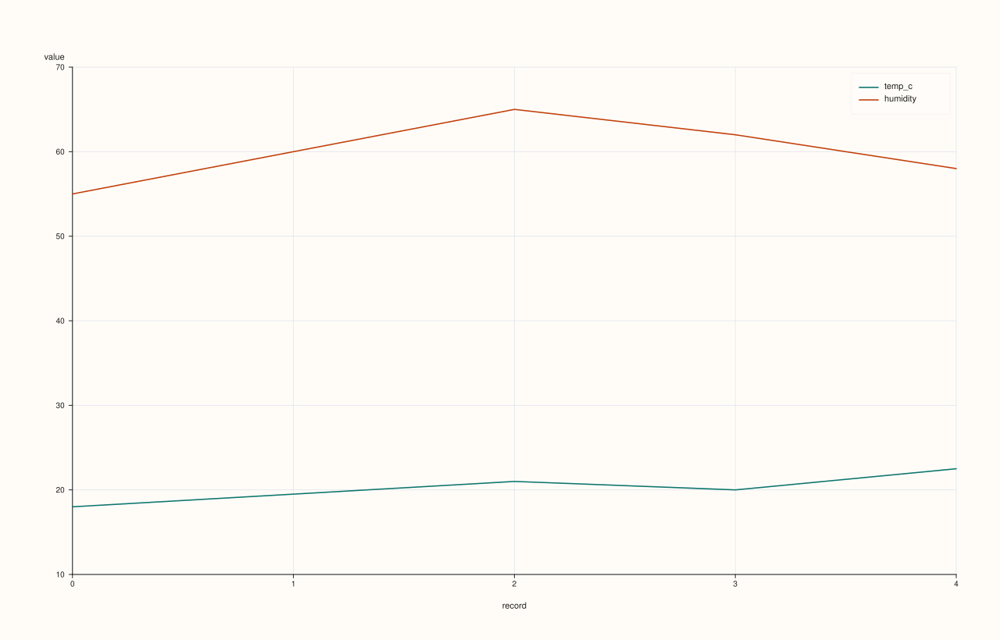
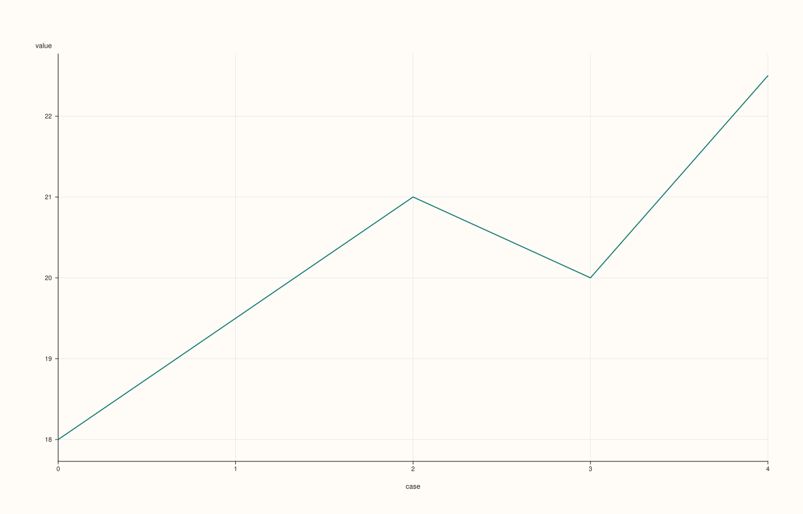

CatalogPlotAccessor::auto_plot¶
Back to CatalogPlotAccessor API Reference
Signatures¶
CatalogPlotAccessor::auto_plot() const -> pluss::pl::Studio
CatalogPlotAccessor::auto_plot(const AutoPlotOptions& options) const -> pluss::pl::Studio
What It Does¶
Picks a chart automatically from the catalog’s own shape, with no feature/key selection
required from the caller — useful for a quick first look at an unfamiliar catalog. Unlike
DataFrame::plot().auto_plot()’s multi-rule decision tree (row count, feature count,
feature kinds all feed into the choice), Catalog::plot().auto_plot() only has two
outcomes, both of which delegate rather than drawing anything themselves:
Exactly one plottable (Series/Timeline/TimeIndex) key — delegates straight to that single key’s own
Stream::plot().auto_plot()(StreamPlotAccessor::auto_plot()), passing the accessor’s ownoptions_through.Zero, or two-or-more, plottable keys — delegates to
line(pluss::msharp::RangeView::Of<std::string_view>{}, std::nullopt, pluss::table::LinePlotOptions{})— i.e. exactlyline()’s no-arguments, empty-selection form: every plottable key in the catalog, each its own trace, no sharedx_key(so each key falls back to its own self-axis).
options is accepted for shape-compatibility with the wider plotting-option story but is
otherwise unused — AutoPlotOptions is an empty struct (struct AutoPlotOptions {};), so
the two overloads always behave identically.
Parameters¶
options (const AutoPlotOptions&, optional)
Accepted but unused — AutoPlotOptions has no fields.
Returns¶
pluss::pl::Studio
Either the single delegated key’s own auto-plot chart, or a multi-key line() chart —
see “What It Does” above.
Examples¶
Example 1. Two or more plottable keys: delegates to line()’s empty-selection form.
using namespace pluss::kindle::literals;
auto weather = pluss::kindle::Catalog({
"temp_c"_k = pluss::kindle::Stream(pluss::make_series({18.0, 19.5, 21.0, 20.0, 22.5})),
"humidity"_k = pluss::kindle::Stream(pluss::make_series({55.0, 60.0, 65.0, 62.0, 58.0})),
});
auto chart = weather.plot().auto_plot();
chart.show();
Both temp_c and humidity are plottable, so this is exactly
weather.plot().line() — every plottable key as its own line trace, each on its own
positional self-axis (both happen to be the same length here, so they line up).

Example 2. Exactly one plottable key: delegates to that key’s own Stream::plot().auto_plot().
using namespace pluss::kindle::literals;
auto single = pluss::kindle::Catalog({
"temp_c"_k = pluss::kindle::Stream(pluss::make_series({18.0, 19.5, 21.0, 20.0, 22.5})),
});
auto chart = single.plot().auto_plot();
chart.show();
single has exactly one plottable key, so this call is equivalent to
single.keys("temp_c").plot().auto_plot() — a single-stream chart, not a line() call.

Example 3. An undefined (default-constructed) catalog throws.
pluss::kindle::Catalog empty;
try {
auto bad = empty.plot().auto_plot();
} catch (const std::exception& e) {
std::cout << e.what();
}
Output¶
Catalog::plot().auto_plot: undefined handle
A default-constructed Catalog is not just empty — defined() itself is false, so the
defined() check fails before the (separate) empty() check ever runs.
Notes¶
Only two outcomes: exactly one plottable key delegates to that key’s own
Stream::plot().auto_plot(); anything else (zero or several) delegates toline()’s empty-selection form. There is no row-count- or dtype-based branching the wayDataFrame::plot().auto_plot()has.optionsis accepted but has no effect —AutoPlotOptionsis an empty struct.An undefined handle throws before an empty-but-defined one would even be checked — see Example 3.
Note keys are never counted as “plottable” here, the same exclusion every other method on this accessor applies via its empty-key-selection default.
See Also¶
CatalogPlotAccessor::line: the chart this delegates to when there are zero or several plottable keys.Catalog::plot: how to enter this accessor in the first place.